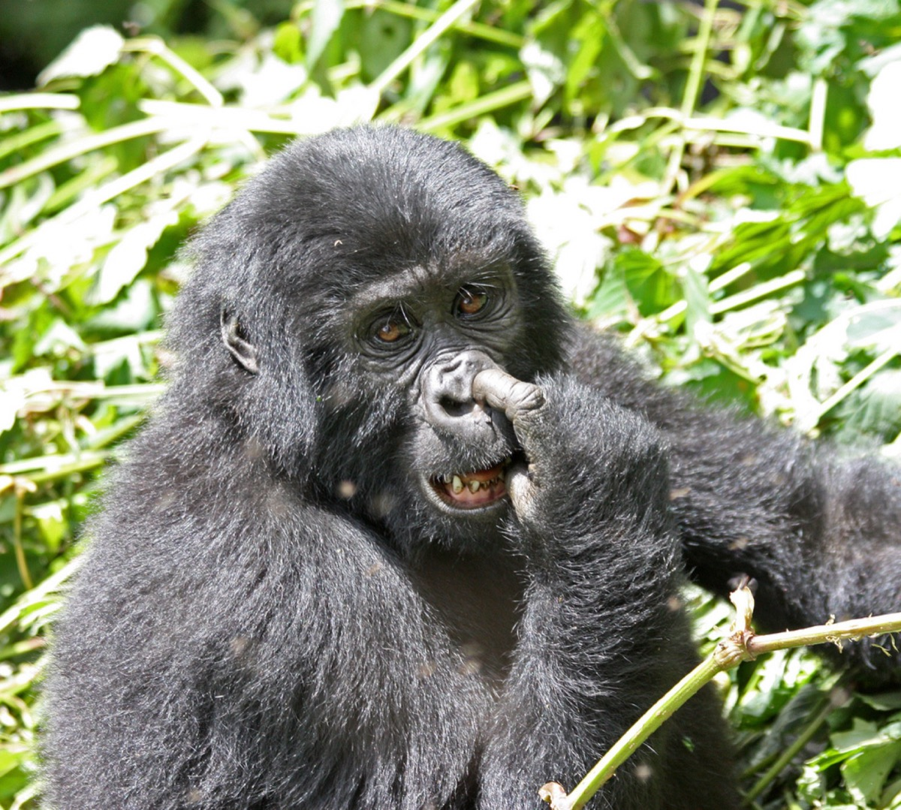

Sfat
Cine are urechi să audă
Eu nu sunt cu nimeni rudă
Sunt cum sunt, și sunt păros
Și la trup tare vânjos.
Dau un sfat ca-nvățătură
Copii, să vă spălați pe dantură
Nu băgați degetu-n nas
Vedeți eu cu ce-am rămas?
De vreți să mâncați cireșe
Mâncați cireșe culese
Nu vă urcați în cireș
Că puteți ca să dați greși
Voi nu știți face ca mine
Prin crengi trupul să v-atârne
Și la cel mai mic avânt
Să zburați către pământ
Cine are urechi să-audă
Și ochi ageri să pătrundă
Gură care să vorbească
Și creier ca să gândească
Să ia tot ce-am spus în seamă
Pe mine Gogu mă cheamă
Fără degete-n urechi
Puteți să rămâneți blegi!
Vasile Groza
Apare și în: Poezii cu animale.